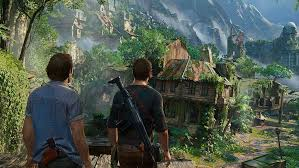
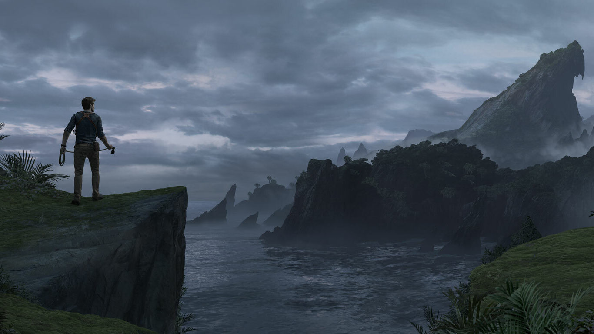

Galería de Imágenes
Una pequeña galería en la que se muestran distintas escenas del juego, que sirven para dar muestra de la calidad gráfica del mismo.


Una pequeña galería en la que se muestran distintas escenas del juego, que sirven para dar muestra de la calidad gráfica del mismo.

